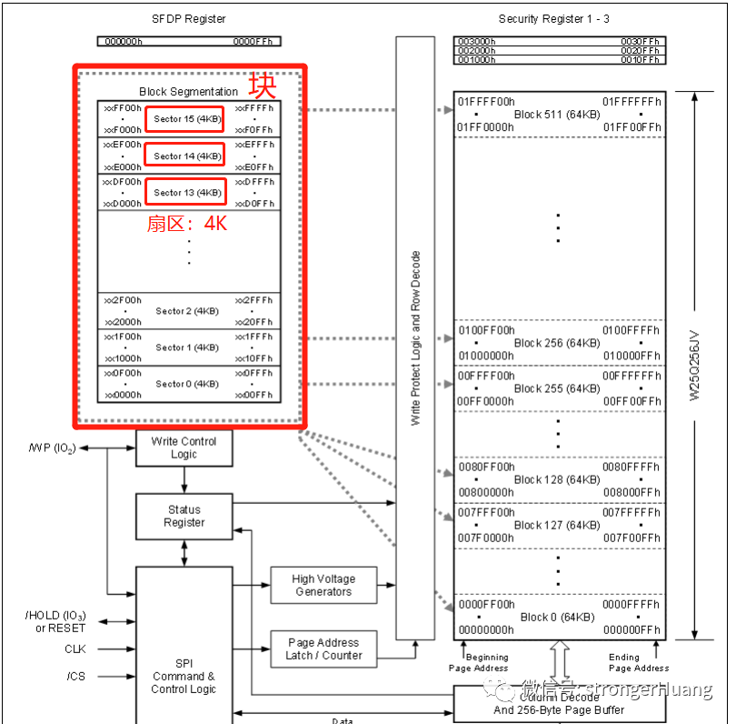
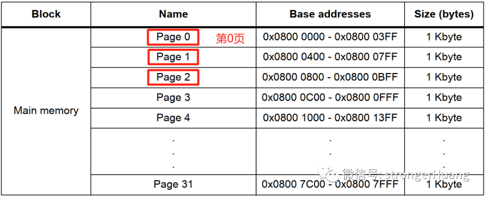
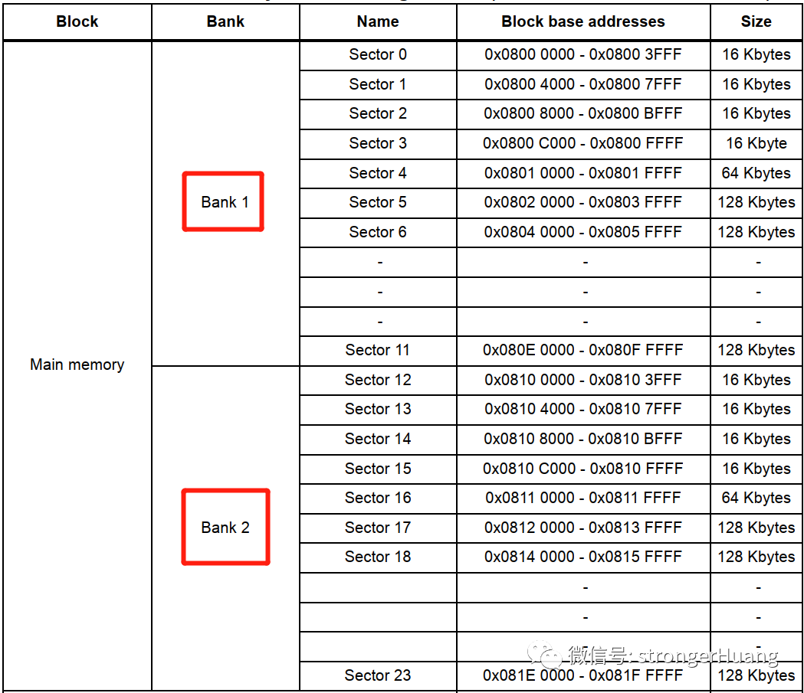
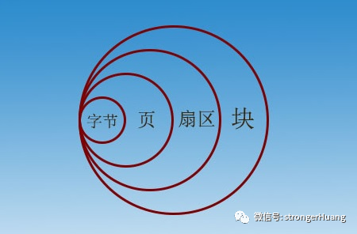
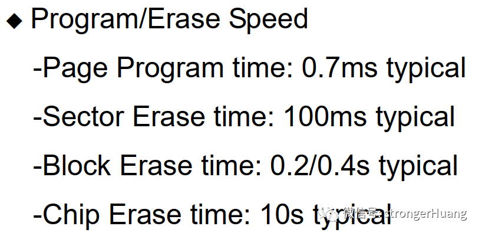
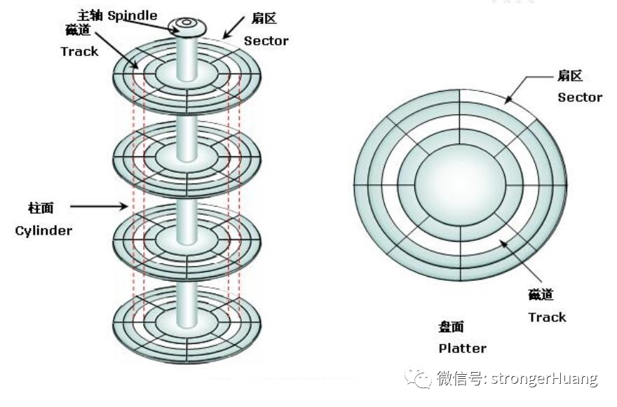
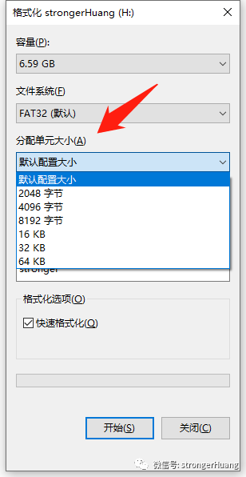

存储器Flash页、扇区、块的区别
大家都知道Flash是用于存储数据的存储器，但很多读者看到页(Page)、扇区(Sector)、块(Block)等这些单位时一脸懵逼，这到底是什么，有什么区别？
下面就来讲讲关于Flash内部结构组织以及相关的内容。
页、扇区、块的描述
扇区、块这些专用名词，其实是从早期的软盘、硬盘等存储器发展而来，目的是将一个存储器划分为多个（扇区、块）区域，更方便的编程管理这些存储单元。
1.页（Page）
Flash存储器中一种区域划分的单元，好比一本书中一页（其中包含N个字）。
比如：STM32F1中小容量芯片内部Flash，1K字节为1页，整个Flash分为32页（当然，不同容量的芯片，页数不同）。

注：不同厂家的、不同类型存储器的页大小不同，1KB、2KB、4KB等各种容量的页大小都有。
2.扇区（Sector）
扇区和页类似，也是一种存储结构单元，只是扇区更常见，大部分Flash主要还是以扇区为最小的单元。
比如：W25Q256芯片以4KB为1扇区。

同样：不同厂家的、不同类型存储器的扇区大小可能不同。
3.块(Block)
块，比扇区更高一个等级，一般1块包含多个扇区。
同样，以上图W25Q256芯片为例：1块包含16个扇区。
4.额外说明
不同厂家的、不同类型存储器的划分方式不同，有的以页为最小单元，有的以扇区为最小单元，但大部分都以扇区为最小单元。
还有，你可能会看到一些其他的名词，比如：和扇区一个级别的SubSector，和块一个级别的Bank、Bulk等。

它们的区别
其实，从上面的描述，大家应该看出来它们的区别了。
用包含关系来描述Flash物理分区的话：芯片包含多个块，块又包含多个扇区，扇区又包含多个页，页包含多个字节。

根据容量大小来说，它们的关系：
页（Page）< 扇区（Sector） < 块（Block）< 芯片（Chip）

网上有一个很形象的比如：
Flash芯片就像一列火车，块（Block）就像一节车厢，车厢里的每排座位就像一个扇区（Sector）。
文件系统中的扇区、块
上面描述的Flash存储器物理地址的划分，为了方便管理，编程读写操作Flash时引入了文件系统。
文件系统的种类很多，比如：FAT、FAT32、exFAT 、 Ext3、 NFS、 NTFS等。不同文件系统，底层对存储地址的划分可能不同。
在MCU这类嵌入式系统中，页、扇区是最小的物理存储单元，但在Windows、Linux这类系统中，这么小的存储单元已经不能满足要求了（不能对众多扇区寻址），于是就会以块作为最小的寻址单元。
在Windows环境下，块是另外一种称呼，叫簇，可以理解一群、一组（扇区）。

注：簇是操作系统所使用的逻辑概念，而非磁盘的物理特性。
最小存储单元如果太小了，会造成寻址空间不够，像现在动辄上G、T的存储容量，太小了肯定
如果太大，会造成存储空间的浪费，也就是所谓的碎片。
所以，最小存储单元应该要根据存储器大小设置一个合理的值，就如U盘分配单元大小一样：

U盘格式化时，一般建议选择默认配置即可。